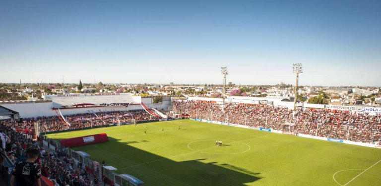

INSTALACIONES
La nueva camiseta de instituto en tus manos
La sede del club está ubicada en pleno corazón de Alta Córdoba. Cercada entre las calles: Jujuy, Calderón de la Barca, Sucre y Lope de Vega. Allí se realizan la mayoría de la actividades deportivas.
El MONUMENTAL
El Estadio Juan Domingo Perón, es la cancha donde el equipo de fútbol profesional hace de local. Tiene capacidad para 26 mil personas. Además cuenta con palcos Vip, Platea Vip, vestuario local y visitante, sale de calentamiento, museo de glorias donde además se realizan las entrevistas a los jugadores post partido.
